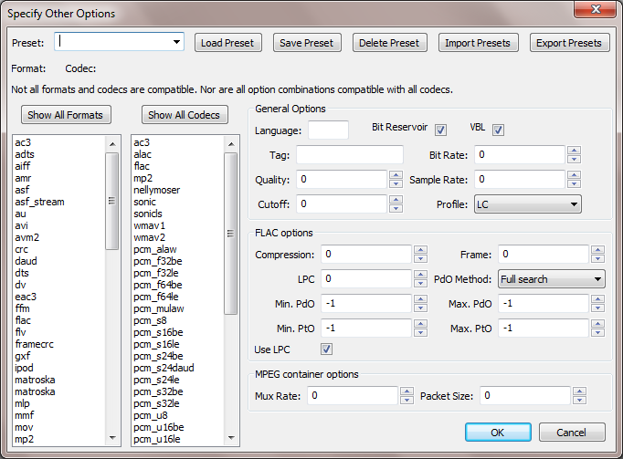

Custom FFmpeg Export
From Audacity Manual
The custom FFmpeg exporter is available if you have installed the optional FFmpeg library. The dialog lets you export a specific codec in a specific format container.
- 
Accessing the Custom Exporter
Click then in the "Save as type" dropdown, choose "Custom FFmpeg Export" and click "Options...".
Usage
Format and Codec:
- On the left, choose either the format (left hand list) or codec (right hand list). The other list will be reduced to show only compatible entries.
- Choose format or codec from the other list. If you can't find the desired entry, press "Show All Formats" or "Show All Codecs", but note that the dialog will not allow selection of incompatible format/codec pairs.
Options:
- On the right, choose the required options for sample rate, bit rate, quality, bandwidth and so on, as available. Hover over the options to see an explanation of what they do, and recommended settings. If an option is grayed out, it does not apply to the selected format/codec.
Presets:
- A format/codec pair may be saved with its selected options as a preset by typing a name in the "Preset" box and clicking "Save Preset". To recall saved presets, select them from the "Preset" box and click "Load Preset". The Presets are stored in a file called "ffmpeg_presets.xml" in the Audacity data directory:
- Windows: Documents and Settings\<user name>\Application Data\Audacity\
- OS X: ~/Library/Application Support/audacity/
- Linux: ~/.audacity-data/
- You can also export presets to any other location by clicking "Export Presets". To import presets from that location, choose "Import Presets". This merges those presets with the current ones in "ffmpeg_presets.xml".
Export:
- Click "OK".
- Type or select a file name. You must add an extension (for example, ".WAV") compatible with the format you are exporting.
- Click "Save".
- Enter your required metadata tags in the "Edit Metadata" dialog that appears (note that some formats may not support all metadata tags, or may support none at all).
- If everything is fine, the file will be exported. If not, Audacity will show a warning. If the exported file is unplayable or corrupt, try the debug log at . This contains technical information which can be extremely useful when debugging any FFmpeg export, import or library loading issues.
Disclaimer:
- Audacity aims to provide the same exporting/importing features as FFmpeg. That is, you should be able to use Audacity to transcode audio with the same results as using FFmpeg directly. This also means that if FFmpeg can't perform a particular conversion, Audacity can't do it either. The limitations apply to both specific formats and codecs and to their metadata. In particular, FFmpeg can only export about two-thirds of the formats that it can import. Information correct as at August 2008 can be viewed on our main Wiki site. One way to test if there is a problem in the Audacity implementation of FFmpeg is to use a command-line version of FFmpeg separately to perform the same task. If it fails in FFmpeg, then Audacity has the same limitation.